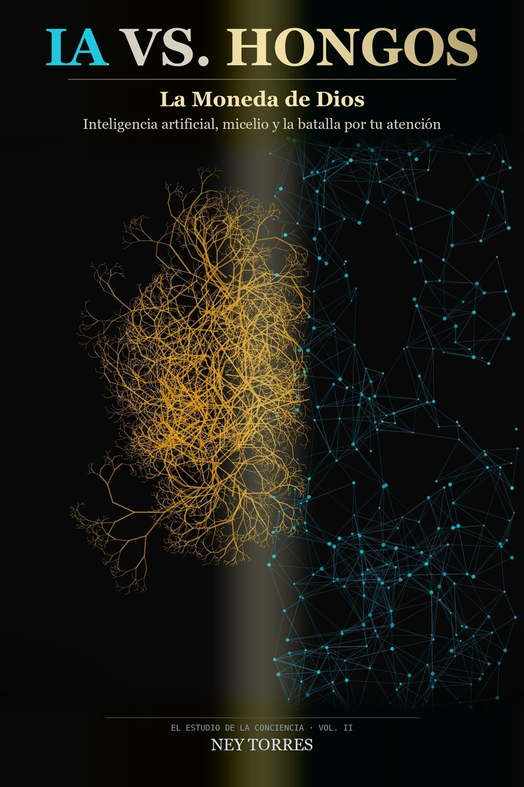

IA vs. Hongos · La Moneda de Dios
La inteligencia artificial y los hongos compiten por tu atención. Este libro es un mapa para entender por qué te cuesta soltar el teléfono. No es un manifiesto psicodélico ni un libro contra las pantallas.
Una misma presa: tu atención.

Lee gratis el comienzo del libro
El libro todavía no está a la venta. Deja tu correo y te aviso el día que salga en Amazon, en Kindle y en tapa blanda.
Descargar Introducción y Capítulo 1 (PDF) Descargar el Test de Mutualismo (PDF)La suscripción es al boletín de Ney Torres en Substack. Puedes salirte cuando quieras desde cualquier correo.
El libro separa lo demostrado de la hipótesis. De la famosa «Wood Wide Web», por ejemplo, dice que su base es más frágil de lo que suele contarse. La Introducción cita dos estudios recientes, uno con psilocibina y otro con personas que escriben ayudadas por un modelo de lenguaje.
Ney Torres no es micólogo ni neurocientífico. Es inversionista, formado en finanzas, y productor del Financially Free Podcast. IA vs. Hongos es el segundo volumen de su serie El Estudio de la Conciencia y se lee sin haber leído el primero.
Avísame cuando salga el libro